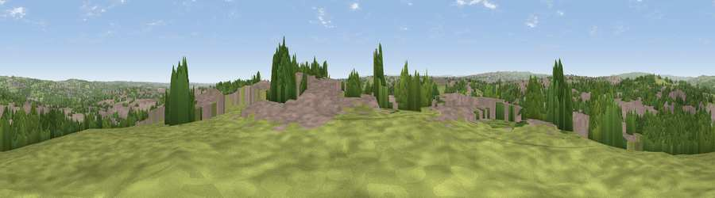

Viewpoint near Pudsey
#26075 in England · top 48% of its area beats it · near PudseyWhere it is
The exact computed spot (SE 21025 33775). Click the marker for map links.
The view, rendered

A 360° render of this exact spot computed from the terrain model, tree cover and land cover — summer colours, afternoon light, calibrated against photographs of famous viewpoints. Real trees, hedges and buildings will differ in detail.
The panorama
Grey silhouette: terrain skyline in each direction (720 bearings, Earth curvature and refraction included). Dashed green: skyline with trees (+15 m) and buildings (+8 m) as obstacles. Blue strip: how far the ground is visible on each bearing.
Where the view opens
Wedge length = distance to the farthest visible ground on that bearing (vegetation-aware). Rings at 10, 25 and 50 km.
What fills the view
42% built-up · 29% grassland · 29% woodland
Angular shares of the visible panorama (visual magnitude), not map area. Landscape diversity 0.48 (0–1 Shannon).
Key numbers
More beautiful places nearby
The staircase of upgrades: each row has a higher view potential than everything closer. Driving times are estimates from straight-line distance, calibrated against real road routing — check an actual route before setting out.
| Place | Direction | Drive | Score |
|---|---|---|---|
| Viewpoint near Calverley | NW · 2 km | ~6 min | 50.7 |
| Viewpoint near Wrose | NW · 6 km | ~12 min | 66.5 |
| Rawdon Billing | N · 6 km | ~13 min | 72.7 |
| Viewpoint near Otley | N · 10 km | ~20 min | 77.5 |
| Viewpoint near East Witton | N · 52 km | ~73 min | 77.8 |
| Darwen Hill | WSW · 54 km | ~76 min | 80.7 |
| Viewpoint near Thirlby | NNE · 58 km | ~80 min | 81.5 |
| White Brow | WSW · 59 km | ~81 min | 82.9 |
53.79986, -1.68227 · source: screening · position refined by local search. Computed location — check access rights before visiting.